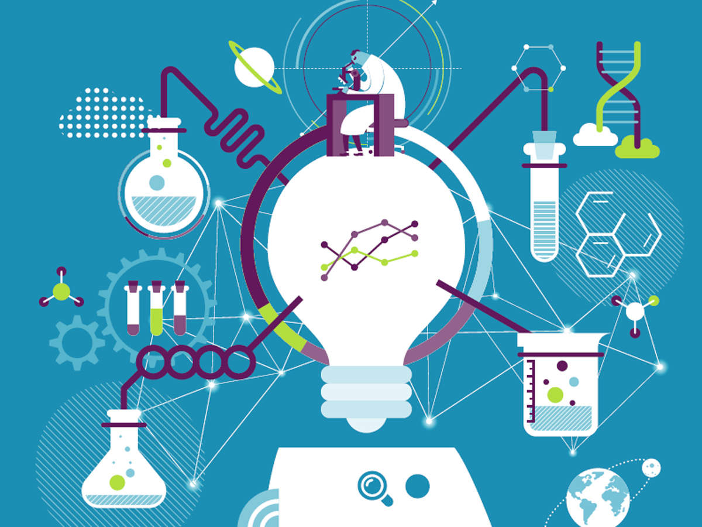

UNIVERSITY OF PITESTI
University with a high degree of confidence
Welcome, we are waiting for you!
OUR MISSION
- Professional development at the university and postgraduate level and in the concept of lifelong learning, for the purpose of personal development, insertion of graduates into the labor market, satisfaction of the socio-economic environment's competence and adaptability to permanent changes.
- Generating and transferring knowledge through fundamental and applicative scientific research, development, innovation and technology transfer, individual and collective creation, relevant and meaningful at regional, national and international level.
- Promoting and developing partnerships at local, regional and national level in order to involve the University in solving community problems and increasing visibility and prestige.

OUR FACULTIES
- Faculty of Sciences, Physical Education and Informatics
- Faculty of Electronics, Communication and Computer Science
- Faculty of Mechanics and Technology
- Faculty of Economics and Law
- Faculty of Education, Social Sciences and Psychology
- Faculty of Theology, Letters, History and Arts
Let's study together!

Scientific Research
and Informatization
and Informatization

International
Relations
Relations

Elearning
UNIVERSITY THROUGH DIVERSITY

Join a community that strives to spread change
around the world while impacting young people!
CREATE YOUR FUTURE!
In the more than 50 years of existence in the Romanian university space, the University of Pitesti is recognized as a source of human resources for labor market.The University of Pitesti provides free and coordinated access to a modern education, based on the needs and realities of the European socio-economic environment.